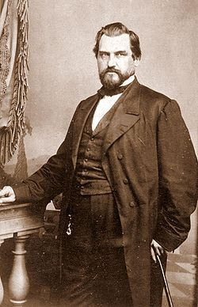

Amasa Leland Stanford (March 9, 1824 – June 21, 1893) was an American tycoon,
industrialist, politician, and a co-founder (with his wife, Jane) of Stanford
University. Migrating to California from New York at the time of the Gold Rush,
he became a successful merchant and wholesaler, and continued to build his
business empire. He served one two-year term as governor of California after his
election in 1861, and later eight years as senator from the state.
As president
of Southern Pacific Railroad and, beginning in 1861, Central Pacific, he had
tremendous power in the region and a lasting impact on California. He is widely
considered a robber baron.Stanford was born in 1824 in what was then Watervliet,
New York (now the Town of Colonie).
He was one of eight children of Josiah and
Elizabeth Phillips Stanford. Among his siblings were New York State Senator
Charles Stanford (1819–1885) and Australian businessman and spiritualist Thomas
Welton Stanford (1832–1918). His immigrant ancestor, Thomas Stanford, settled in
Charlestown, Massachusetts, in the 17th century.Later ancestors settled in the
eastern Mohawk Valley of central New York about 1720.
Stanford's father was a farmer of some means. Stanford was raised on family
farms in the Lisha Kill and Roessleville (after 1836) areas of Watervliet. The
family home in Roessleville was called Elm Grove.
The Elm Grove home was razed
in the 1940s. Stanford attended the common schools until 1836 and was tutored at
home until 1839. He attended Clinton Liberal Institute, in Clinton, New York,
and studied law at Cazenovia Seminary in Cazenovia, New York, in 1841–45. In
1845, he entered the law office of Wheaton, Doolittle and Hadley in Albany.After
being admitted to the bar in 1848, Stanford migrated with many other settlers,
moving to Port Washington, Wisconsin, where he began law practice with Wesley
Pierce. His father presented him with a law library said to be the finest north
of Milwaukee. In 1850, Stanford was nominated by the Whig Party as Washington
County, Wisconsin district attorney.
On September 30, 1850, Stanford married Jane
Elizabeth Lathrop in Albany, New York. She was the daughter of Dyer Lathrop, a
merchant of that city, and Jane Anne (Shields) Lathrop.The couple did not have
any children for years, until their only child, a son, Leland DeWitt Stanford,
was born in 1868 when his father was forty-four